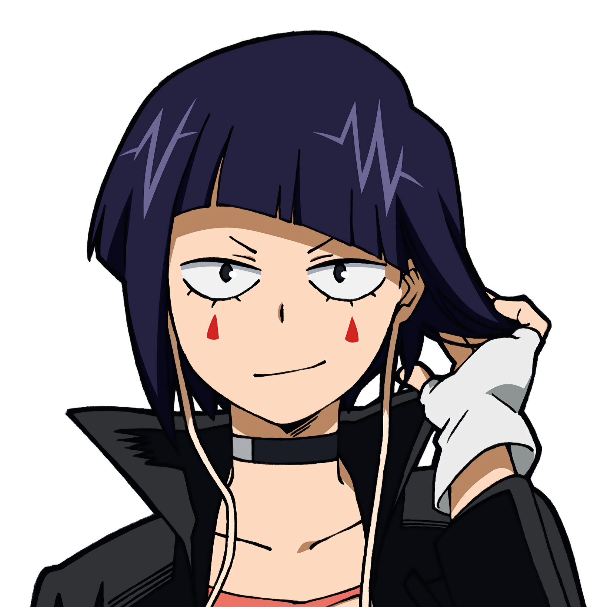

Kyoka Jiro
Nome de Herói: Earphone Jack
Individualidade: Earphone Jack – Possui plugues de fone de ouvido pendurados em suas orelhas. Ao conectá-los em superfícies, pode canalizar o som dos seus batimentos cardíacos como ondas de choque destrutivas ou ouvir sons milimétricos.
Perfil:
Estilo rockeira, pragmática e um pouco sarcástica, mas esconde um lado tímido e muito focado em proteger seus amigos. Ama música.